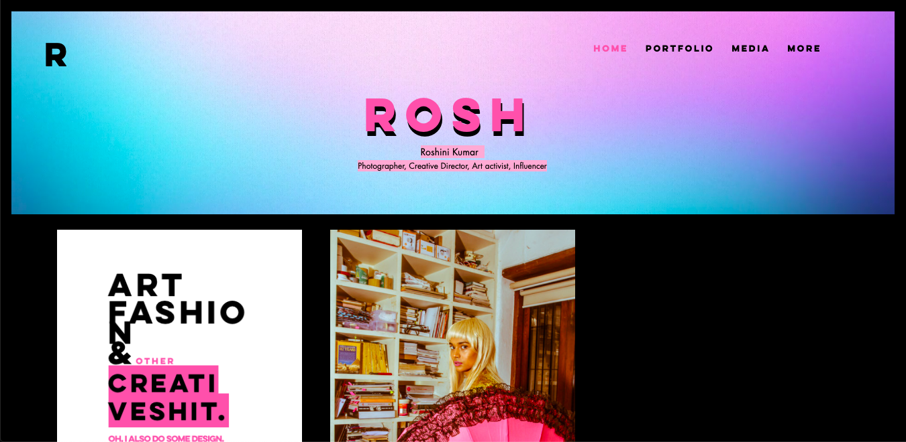
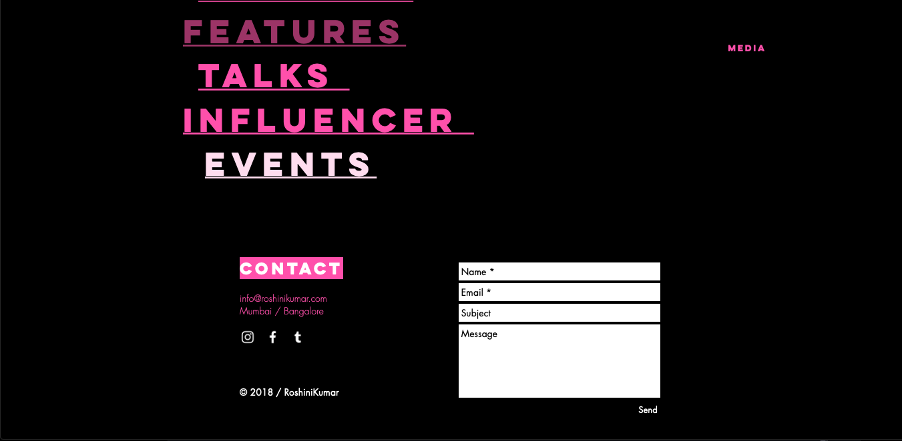

My next research site is the personal site of artist Roshini Kumar. I enjoy navigating through each portion of her portfolio; the images are lined up in a satisfying grid system. The bold colors are eye catching and make a statement from the moment you land on the page and keep me from getting bored as I navigate. The consistent animated header is also very satisfying, and taking a further look into the developer tools on my browser revealed to me that it is a javascript function that allows that to work. I imagined instead that it was an animated GIF that was incorporated into the HTML, but I learned something new. One of the main aspects of the website that I noticed is the consistent contact box in the footer of every page. This is something I want to incorporate into my site because it aligns with the end goal, which is feedback from users and potential collaborators. As soon as a user has seen something that impressed them and won them over completely, they don’t need to search for the contact button or page to navigate to. Simply scrolling to the bottom of the page they know that they can fill in the boxes and submit a response in just seconds, and the goal of the website is fulfilled right then and there. Other design elements of the website I enjoy are that each category has multiple options to choose from, and much like the previous research site, the content is what guides the user instead of words/links/buttons, so the user will navigate by what catches the their eye. Furthermore, when navigating to a specific photograph within a category, each photograph opens into a page of its own with a title and/or description of the image, to add more emphasis on them. Although I enjoy that aspect, it makes it difficult to navigate back to the homepage because those individual pages are not consistent with the same navbar and sort of blocks you off from the website, with only an X button to direct back to the main site.

